A vér
A vér legjelentősebb testnedvünk, kapcsolatot biztosít a szervezetünk és a külvilág, valamint az egyes szervrendszereink között. Pillanatnyi összetétele gazdag információt hordoz szervezetünk állapotáról.
A vérplazma
A felnőtt ember vértérfogata körülbelül 5 liter, amelynek valamivel több mint a fele a vérplazma.
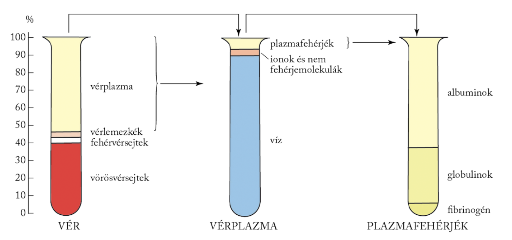
A vérplazma körülbelül 90% vizet és 10% oldott iont és szerves molekulákat tartalmaz. A kationok közül a $Na^{+}$, a $K^{+}$, a $Ca^{2+}$, az anionok közül a $Cl^{-}$ és a $HCO_{3}^{-}$-ionok fordulnak elő a legnagyobb mennyiségben.
A kisebb szerves molekulák közül szőlőcukor, valamint aminosavak, továbbá karbamid és húgysav találhatók benne.
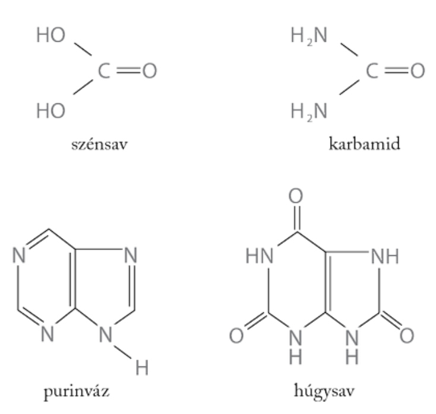
A szőlőcukor a sejtek könnyen felvehető tápanyaga. Mennyiségétől függ a vércukorszint. Az átlagos, egészséges vércukorszint $5 mmol / dm^{3}$. A karbamid a fehérjék, a húgysav a nukleinsavak mérgező bomlásterméke. A vizelettel ürülnek ki a szervezetből.
A szerves molekulák másik része kolloid mérettartományba eső fehérje. Közülük a fibrinogén a véralvadásban játszik szerepet. Egy másik csoportjuk, az albuminok a vér ozmózisnyomásának biztosításában, valamint az anyagszállításban fontosak. A globulinok összetett fehérjék, amelyek polipeptidláncukhoz kapcsoltan elsősorban szénhidrátokat tartalmaznak. Egyes típusaik különböző anyagok szállítását végzik a plazmában, mások mint ellenanyagok, a szervezet védekező működésében jelentősek.
A sejtes elemek
A vér sejtes elemei a vörösvérsejtek, a fehérvérsejtek és a vérlemezkék. Vörösvérsejtjeink korong alakú, keresztmetszetben piskóta formájú sejtek.
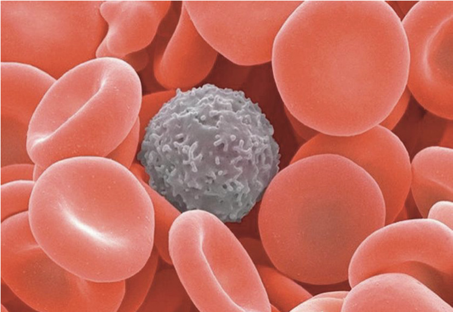
A sejtes elemek közül a legnagyobb mennyiségben fordulnak elő. Egy felnőtt ember $1 mm^{3}$ vérében átlagosan 4-5 millió található. A vörösvérsejtek a vörös csontvelőben keletkeznek. Fejlődésük 4-5 napig tart. A vérbe kerülő érett vörösvérsejtek nem tartalmaznak sejtmagot. Helyettük hemoglobin-molekulák épülnek a vörösvérsejtek sejtplazmájába. A hemoglobin-molekula négy alegységből épül fel. Összetett fehérje, egy-egy alegységében a globinlánchoz vastartalmú porfirinváz kapcsolódik.
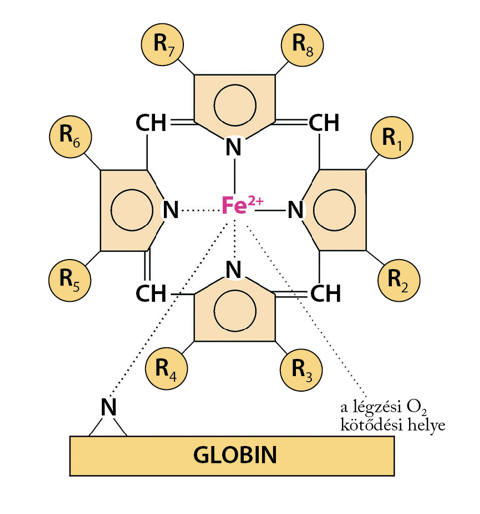
A hemoglobin jelentősége a légzési gázok szállításában van. A porfirinváz vastartalmának köszönhetően átmenetileg képes molekulárisan megkötni a légzési oxigént, majd ebben a formában szállítja el a szövetekig, ahol leadja.
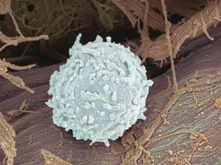
A hemoglobin oxigénkötését elsősorban a környezetében levő oxigéngáz nyomása befolyásolja.
A vörösvérsejteknek a szén-dioxid szállításában is szerepük van. A sejtek lebontó folyamataiban képződő szén-dioxid a szövetek felől a vérbe, majd a vörösvérsejtekbe diffundál, és ott több reakcióban is részt vesz. A tüdő hajszálereibe érve a vörösvérsejtekből megindul a diffúziója az alacsonyabb szén-dioxid-gáznyomású léghólyagocskák felé.
A vörösvérsejtek élettartama a vérben körülbelül 120 nap. Az elöregedett vörösvérsejteket a lép bontja le. A lépben széteső vörösvérsejtekből felszabadul a hemoglobin, amelynek hemrésze a máj által termelt epe festékanyagaivá alakul, másik részét a szervezet ismét hemoglobin előállítására használja fel. Az elöregedett vörösvérsejtek pótlására a vörös csontvelőből állandóan új vörösvérsejtek kerülnek a keringő vérbe.
A fehérvérsejtek sem működésüket, sem alakjukat tekintve nem egységesek. Közös jellemzőjük, hogy sejtmagjuk van, hemoglobint nem tartalmaznak, színtelenek. Egy egészséges felnőtt ember 1 mm3 vérében átlagosan 7000–9000 fehérvérsejt található. Felépítésük és működésük alapján három típusba sorolhatók. A falósejtek kiléphetnek a vérből, amőbaszerűen önálló mozgásra képesek, fertőzés vagy sérülés esetén körülveszik a behatoló baktériumokat vagy kisebb méretű idegen anyagokat, és bekebelezik, majd enzimjeik segítségével lebontják. Közülük a kis falósejtek (granulociták) a vörös csontvelőben keletkeznek, élettartamuk mindössze néhány nap. A nagy falósejtek (monociták) ugyancsak a vörös csontvelőben keletkeznek, és a kis falósejtekhez hasonlóan amőbaszerű mozgásra képesek. A falósejtek csak átmenetileg tartózkodnak a vérben, később a különböző szövetekbe lépnek ki, ahol fontos szerepük van a szervezet védekezésében. Működésük során kiszűrik a szövetekből a nagyobb méretű idegen anyagokat, a kórokozókat, bekebelezik a különböző sejttörmelékeket, majd ugyancsak lebontják azokat. A fehérvérsejtek harmadik típusát a nyiroksejtek (limfociták) képezik. A vörös csontvelőben és a a nyirokszervekben alakulnak ki. A fehérvérsejtek működésével az immunrendszerünk tárgyalásánál fogunk részletesen foglalkozni.
A vérlemezkék és a véralvadás
A vérlemezkék a vörös csontvelőben képződő óriási sejtekből kialakuló sejttöredékek. Számuk 1 mm3 vérben 150-400 000. Ha egy ér megsérül, a vérből vérlemezkék tapadnak a sérült érfalra, majd egymással is összekapcsolódnak. A sérülés helyére folyamatosan érkező vérlemezkék összekapcsolódásával rövid idő alatt képződő sűrű massza az érfal nyílását elsődlegesen elzárja. Közben a sérült érfalban és az összekapcsolódó vérlemezkékben lejátszódó kémiai folyamatokban a vérplazmában lévő egyes specifikus fehérjék hatására a fibrinogénmolekulák oldhatatlan fibrinszálakká alakulnak és kicsapódnak. Az így létrejövő hálós szerkezet átszövi a véralvadék tömegét, és véglegesen lezárja a sérült érfalat. Ez a folyamat a véralvadás.
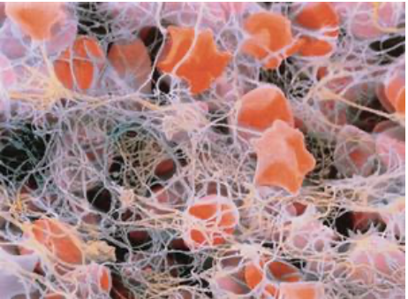
Kisebb sebek esetén a véralvadás gyors, a sérülések néhány percen belül elzáródnak. A folyamathoz kalciumionok is szükségesek. A szilárd véralvadék mellett kiszűrődő sárgás színű folyadék pedig a vérszérum, vagy másik nevén vérsavó. Az orvosi gyakorlatban gyakran szükséges a vér alvadásának megakadályozása. Ennek legegyszerűbb formája a kalciumionok kicsapása a vérből.
A vérkeringés
Az anyagszállítási feladatokat szervezetünkben a vérkeringés látja el. Az ember vérkeringése zárt, és két vérkörből, a kisvérkörből (szív – tüdő – szív) és a nagy vérkörből (szív – test –szív) áll. A keringési rendszer központja a szív.
A szív
Az anyagszállítási feladatokat szervezetünkben a vérkeringés látja el. A keringési rendszer központja a szív. A szív a mellüreg közepén helyezkedik el, mintegy ökölnyi szerv.
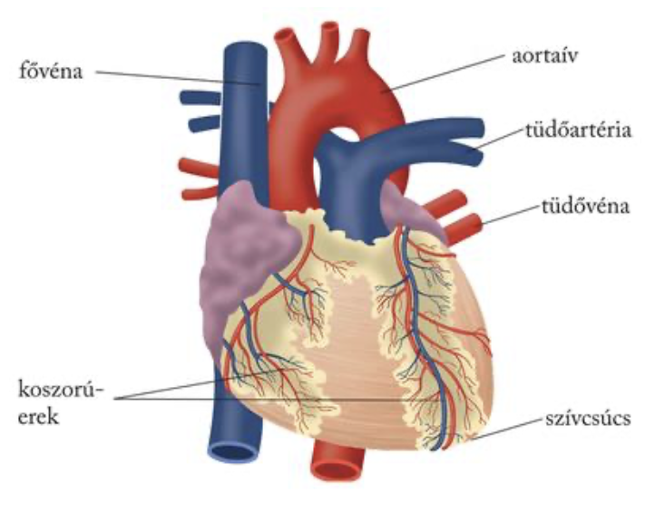
Kívülről a szívburok vékony kötőszöveti hártyája borítja, alatta a szívfal vastag izomrétege következik, majd belső felületét ugyancsak kötőszöveti eredetű szívbelhártya béleli. A vért a szívizomzat ritmikus összehúzódása mozgatja. A szívizomszövet izomrostokból áll, akárcsak a harántcsíkolt izomszövet, de attól eltérően az izomrostok egymással is összeköttetésbe lépnek, és hálózatot alkotnak.
Szívünk négyüregű: két pitvarból és két kamrából áll. A két pitvar és a két kamra között a szívsövény képez határt, a pitvarokat és a kamrákat pedig szívbillentyűk választják el egymástól, és billentyűk vannak a kamrák és a belőlük kilépő erek szájánál is. Működésük a vér egyirányú áramlását biztosítja.
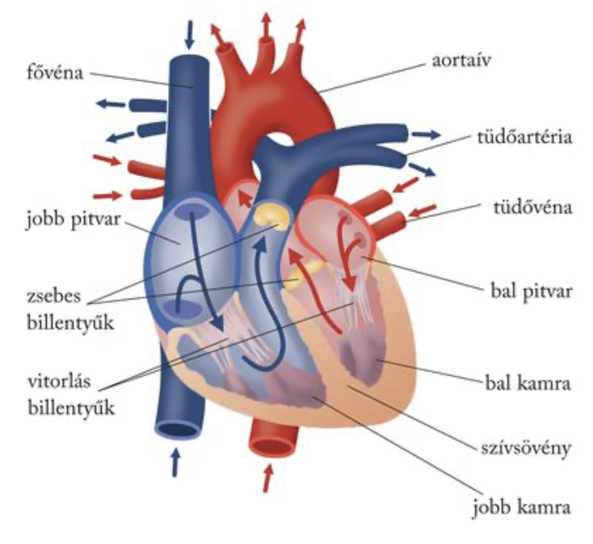
A szív működése
A szív működésének alapja a szívizomzat ritmusos összehúzódása és elernyedése. A szívnek saját ingerületképző és vezető rendszere van, melynek sejtjei két központba tömörülnek. Az elsődleges központ a jobb pitvar falában lévő szinuszcsomó.
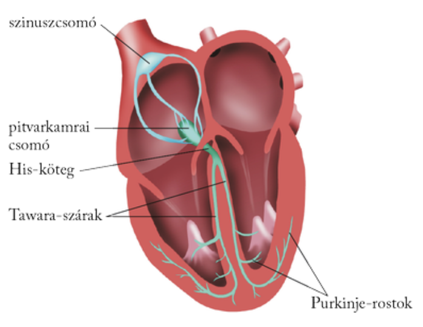
Az itt keletkezett ingerület minden irányba tovaterjed, és működésbe hozza a pitvarok izomrostjait. Az ingerület eljut a másik központba, a jobb pitvar alsó részében lévő pitvar-kamrai csomóba, és az is ingerelt állapotba kerül. Innentől az ingerületet a kamrák falán végighúzódó ingerületvezető rendszer (His-köteg, Tawara-szárak) továbbítja a végelágazódások (Purkinje-rostok) felé, amelyek behatolnak a kamrák szívizomrostjai közé.
A szív összehúzódása a két pitvar egyidejű összehúzódásával kezdődik, közben a kamrák ernyedt állapotban vannak. Amikor a pitvarokban a beömlött vértől és az összehúzódástól a nyomás magasabb lesz, mint a kamrákban, a szívbillentyűk kinyílnak, és a vér a kamrákba folyik. Ezt követően megkezdődik a kamrák összehúzódása, miközben a vitorlásbillentyűket a növekvő vérnyomás bezárja, így a kamrákban levő vér nem tud visszaáramlani a pitvarok felé. A kamrákban hirtelen megnőtt nyomás a vért a szívből kilépő verőerek, artériák felé préseli. Ennek hatására kinyílnak a verőerek felé vezető zsebesbillentyűk, és a vér a test, illetve a tüdő felé áramlik. A kiürülő kamrákban a nyomás fokozatosan kisebb lesz, mint a verőerekben. A vér egy része ezért a verőerekből visszafelé áramlik, ezzel a zsebesbillentyűk falát egymáshoz feszítve bezárja a kamrák felé vezető visszautat. A kamrák összehúzódása alatt a kialakuló szívóhatás miatt az elernyedt pitvarokba áramlik a vér, majd újra kezdődik a teljes folyamat elölről.
A jobb pitvarba a test felől érkező gyűjtőerek, vénák hozzák vissza a vért. A bal pitvarba a tüdőből a tüdő gyűjtőerei szállítják az oxigénben felfrissült vért. A pitvarok működése nem kíván különlegesen nagy erőkifejtést, mert kis nyomással szemben kell a vért továbbítani. Ezért a pitvarokban vékonyabb a szívfal, mint a kamrákban, melyekből nagy erővel kell kilökni a vért a jobb kamrákból a tüdő felé, de főleg a bal kamrából a test felé vezető verőérbe. Itt ugyanis a verőerek nagyobb ellenállásával szemben kell a vért továbbítani.
Pulzus és perctérfogat
Egy egészséges felnőtt ember szíve nyugalmi állapotban percenként átlagosan 75 alkalommal húzódik össze és ernyed el, ez a pulzusszám.
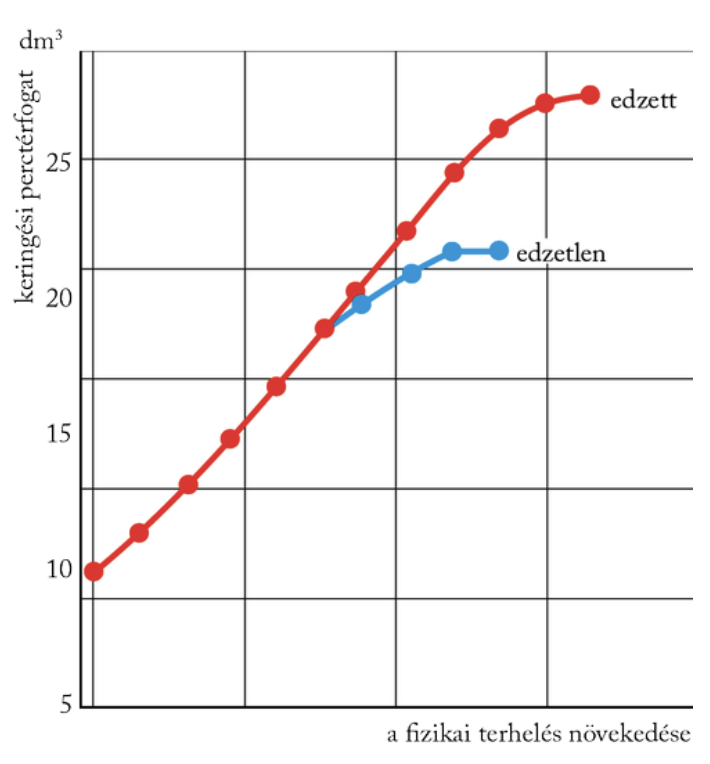
Egy kamra összehúzódásakor átlagosan 70 milliliter vért jut a verőérbe, ez a nyugalmi pulzustérfogat. Tehát a szív egy-egy kamrájából percenként a teljes vérmennyiség, körülbelül 5-5 liter vér jut az érrendszerbe, ami a nyugalmi perctérfogatnak felel meg. A tényleges keringési perctérfogat a szervezet állapotától függ, a szükségleteknek megfelelően növekedhet. Az edzett ember és az edzetlen ember keringése eltérő módon reagál a fizikai erőkifejtésre. A megnövekedett vérmennyiséget az edzett ember szíve a pulzustérfogat növekedésével, az edzetlené a pulzusszám növekedésével biztosítja.
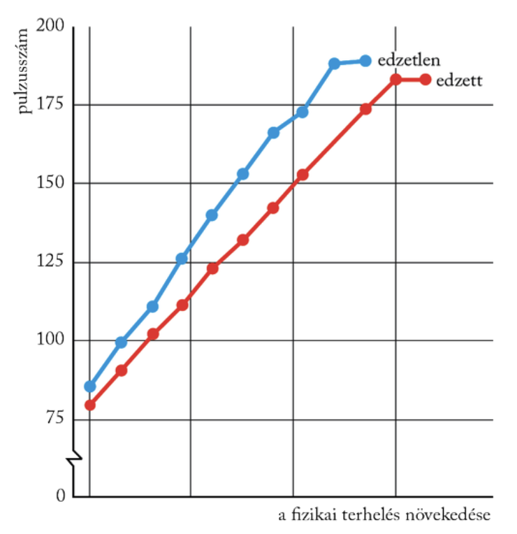
Az érrendszer
A szívből kiáramló vért a verőerek rendszere osztja szét az egyes szervek között.
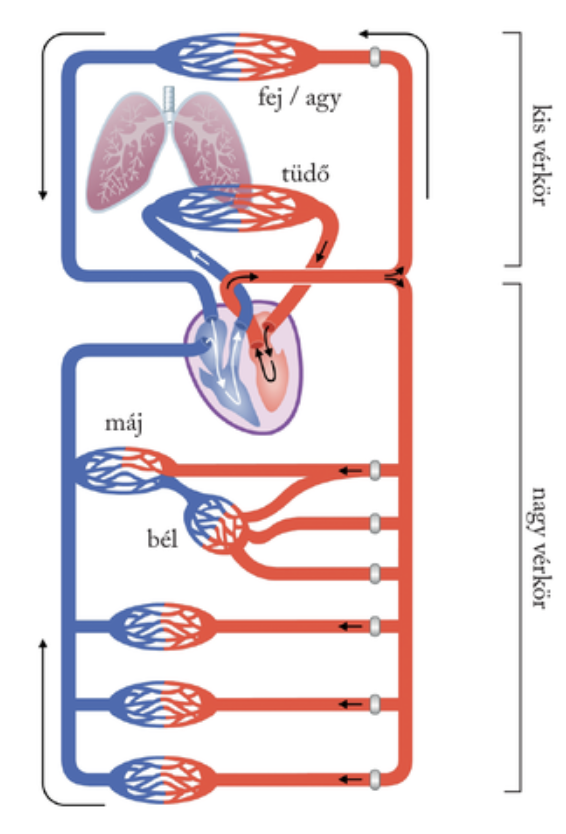
A verőerek falát főleg simaizomszövet és rostos kötőszövet építi fel. A bal kamra összehúzódásakor a vér közvetlenül a főverőérbe, az aortába, majd a belőle eredő nagyobb verőerekbe, artériákba jut. Az aorta tágulékony és rugalmas falú, képes befogadni a kilökött teljes vérmennyiséget, amelyet folyamatosan továbbít, ezért a vér áramlása az erekben folytonos, és az összehúzódás és elernyedés közötti nagy nyomáskülönbség is jelentősen lecsökken. Az aorta kezdeti szakaszán a vérnek az érfalra gyakorolt nyomása – a vérnyomás – összehúzódáskor 16 kPa (120 Hgmm), elernyedéskor pedig 11 kPa (80 Hgmm) körül mozog. A vérnyomásnak ez a periodikus változása okozza a verőerek falának ütemes lüktetését, a pulzust. Ez kézzel is jól érzékelhető olyan verőerek mentén, amelyek csontos alapon és a bőrhöz közel futnak. Így például a csukló verőere alkalmas a pulzus vizsgálatára.
A verőerek további elágazódásával az erek száma egyre több lesz, ugyanakkor átmérőjük egyre szűkül. A kis verőerek végül a szervekben szerteágazó hajszálerekbe, kapillárisokba mennek át. Összkeresztmetszetük ennek megfelelően egyre nő, és a hajszálerek területén a legnagyobb fő verőér átmérőjének több százszorosát is eléri. Ez együtt jár a vérnyomás jelentős csökkenésével.
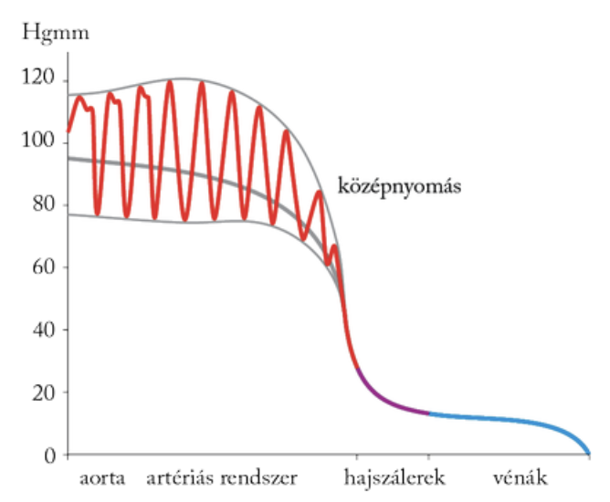
A hajszálerek behálózzák a szöveteket, majd kis gyűjtőerekbe szedődnek össze. A kis gyűjtőerek nagyobb vénákká egyesülnek, végül a nagy gyűjtővéna a jobb pitvarba torkollik.
A gyűjtőerek fala a verőerekénél vékonyabb, kevesebb simaizomszövetet és több kötőszövetet tartalmaz. Tágulékonyabbak, de kevésbé rugalmasak. Bennük billentyűk is találhatók, amelyek a vér egyirányú áramlását biztosítják. A bennük lévő vér áramlását a vázizomzat működése is segíti. A szív saját tápanyag- és oxigénellátását az aortából a szív felé visszafutó koszorúerek biztosítják.
A nagyvérköri kapillárisok szerepe
A nagyvérköri kapillárisokban áramló vér és a szöveti folyadéktér, más néven a nyirok között állandó az anyagforgalom. A kapillárisok kezdeti szakaszához viszonylag nagy nyomással érkezik a vér, és a féligáteresztő érfalon keresztül fehérjementes vérplazma szűrődik át a szövetek közti folyadéktérbe. Emiatt megnő vérplazma ozmózisnyomása, hiszen magasabb lesz a benne oldott fehérjék koncentrációja. A kapillárisok véna felöli szakaszán már kicsi a vérnyomás, így a megnövekedett ozmózisnyomásnak köszönhetően a szövetnedv anyagai visszadiffundálnak a vérplazmába.
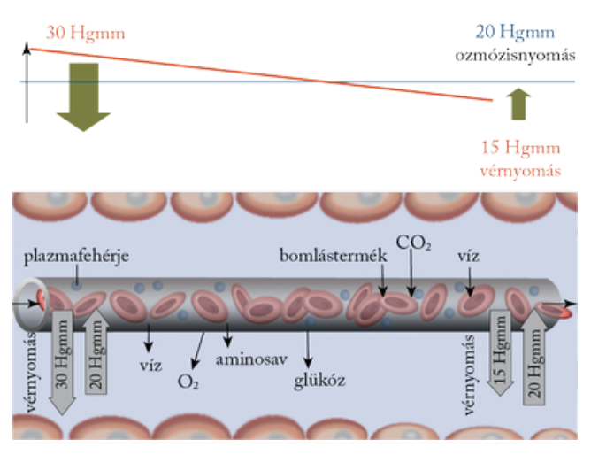
A nyirokképződés során kiszűrödött vérplazmának csak 90%-a jut vissza a kapillárisokba, a fennmaradó 10%-ot a nyirokkeringés juttatja vissza a vérbe. A szöveti sejtek között vakon végződő nyirokhajszálerek összegyűjtik a nyirok feleslegét. A nyirokkapillárisok egyre nagyobb nyirokerekben szedődnek össze, végül a nyirokvezeték a szív közelében a nagy vénába torkollik.
A légzés
A sejtekben zajló lebontó folyamatokhoz szükséges oxigén biztosítása, illetve a keletkező szén-dioxid eltávolítása, a gázcsere, a légzőszervek segítségével történik. Mivel az ember légzőfelülete a tüdőben helyezkedik el, a levegőnek hosszú utat kell megtennie odáig. Ezek összességét légutaknak nevezzük.
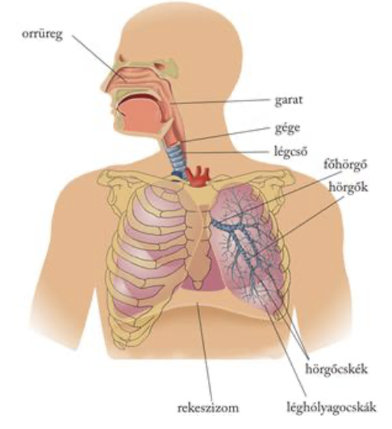
A felső légutak
A légköri levegő elsősorban az orrüregen keresztül érkezik a felső légutakba. Az orrüreget belülről nyálkahártya borítja, amelyet mirigyek váladéka tart állandóan nedvesen. A nyálkahártyát sűrű hajszálérhálózat szövi át, egyenletes melegben tartva az orrüreg belső felszínét. A beszívott levegő itt felmelegszik és vízgőzzel telítődik, miközben porrészecskéit a nyálkahártya csillós hámja kiszűri és kifelé hajtja. Mély lélegzetvételnél vagy beszéd közben a szájüregen keresztül áramlik be a levegő. Az orrüregből és a szájüregből a belélegzett levegő a garatba jut. A garatban a levegő és a táplálék útja kereszteződik, ezt követően a gégén keresztül a légcsőbe áramlik a levegő.
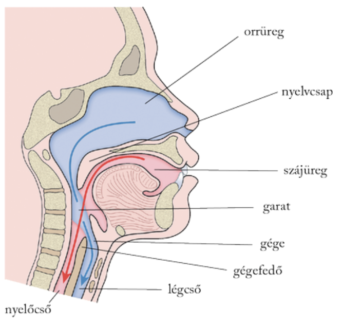
A gége a hangadó szervünk. Vázát porcok alkotják, belső felszínét hangszalagok osztják ketté.
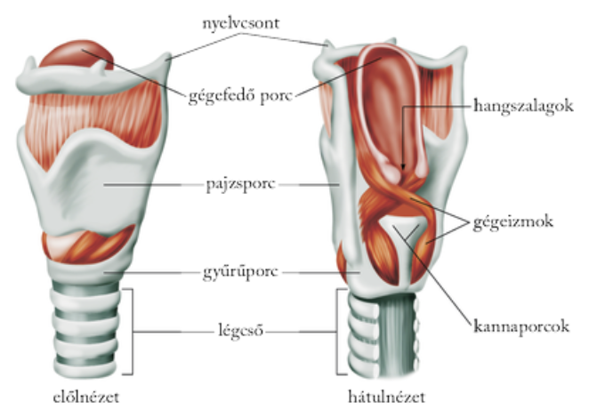
A két hangszalag mozgatását a gége izomzata végzi. Nyugodt légzéskor a két hangszalag közötti nyitott hangrésen keresztül szabadon áramlik a levegő. Belégzéskor tágul a hangrés, kilégzéskor kissé szűkül. Az emberi hangképzés a kilégzéshez kapcsolódik. Beszéd közben a rugalmas hangszalagokat megfeszítjük, a tüdőből a gégén keresztül kiáramló levegő hatására azok rezgésbe jönnek, és a felettük lévő légoszlopban hanghullámok keletkeznek. Ezekből alakul ki – a szájüreg, a nyelv és az ajkak együttműködésével – a hang. Az emberi hang magasságát a hangszalagok hossza és vastagsága mellett a hangrés alakja és a hangszalagok feszessége szabja meg. A rövidebb és vékonyabb, feszes hangszalagok szűkebb hangrés mellett magasabb hangot eredményeznek.
Az alsó légutak
A légcső az alsó légutak kezdeti szakasza. Szintén porcos felépítésű, rugalmas falú cső. Alsó vége két főhörgőre ágazik szét. Ezek a tüdő jobb és bal oldali felébe vezetnek. A két tüdőfél szivacsos szerkezetű, nagy kiterjedésű, rugalmas szerv, amely a mellkas üregében helyezkedik el. A mellkas üregét a hasüregtől a rekeszizom lemeze választja el. A tüdőbe lépő főhörgők további elágazásokkal egyre kisebb csöveket, végül hörgőcskéket hoznak létre. Ezek a szőlőfürtszerűen elhelyezkedő léghólyagocskákban végződnek, amelyek rendkívül vékony fala egyetlen sejtrétegből álló laphám.
A külső és a belső légzés
A léghólyagocskák falát kívülről sűrű hajszálérhálózat fonja körül. Az így összefonódó hajszálerek és léghólyagocskák falán keresztül megy végbe a külső légzés.
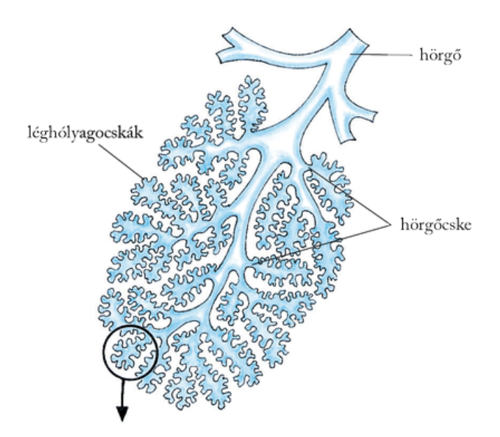
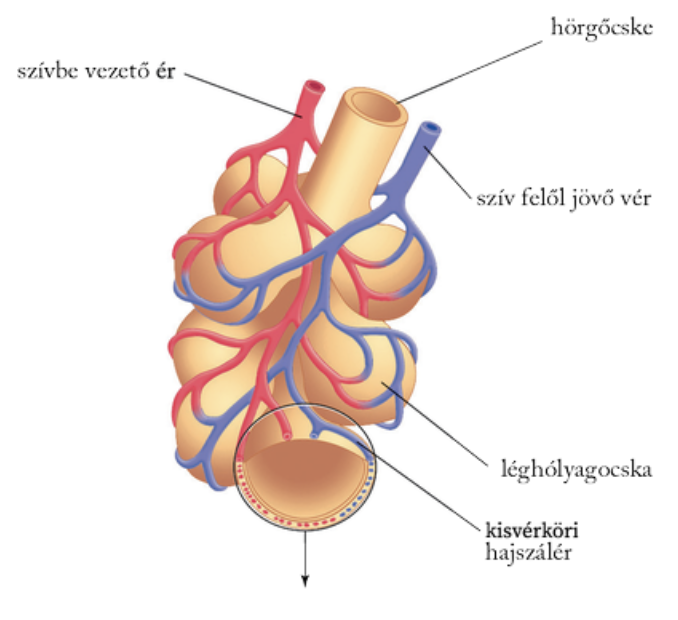
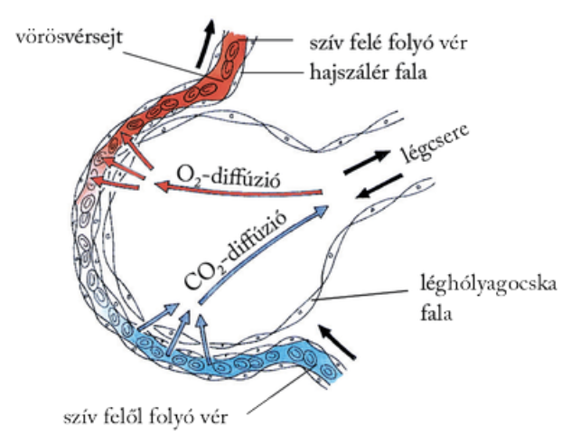
Az emberi tüdő léghólyagocskáinak összesített légzőfelülete kiterítve megközelíti a 100 m2-es nagyságot. A vér felveszi az oxigént a tüdőből, és leadja a szén-dioxidot, mert a tüdőben az oxigén, a vérben pedig a szén-dioxid parciális nyomása nagyobb. A szervek hajszálereiben fordított irányú gázcsere zajlik a vér és a szövetek között. A sejtekből a nagyobb parciális nyomása miatt szén-dioxid diffundál a szövetnedvbe, majd vérbe, miközben a vérből oxigén lép be a szövetnedvbe, majd a sejtekbe. Ez a folyamat a belső légzés. A felvett oxigént a szövetek a sejtlégzés lebontó folyamatához hasznosítják.
A légzőmozgások
A ki- és belégzés során a tüdőben légcsere zajlik. Mivel a tüdőnek nincs saját izomzata, térfogatának változását a rekeszizom, a bordák közti izmok és a törzs egyes izmai segítik. A tüdő és a mellkas fala közötti kapcsolatot és súrlódásmentes elmozdulást a mellhártya kettős rétege biztosítja. Az egyik réteg a tüdő felületéhez tapad, a másik a mellkas falát és a rekeszizom felületét borítja be. A két összeérő hártya között vékony folyadékréteg található. Ezáltal nagyon nehezen választhatók el egymástól, akárcsak két egymásra fektetett nedves üveglemez. Oldalirányban viszont könnyen elcsúsznak egymáson. Ez megkönnyíti a légzőmozgásokat.
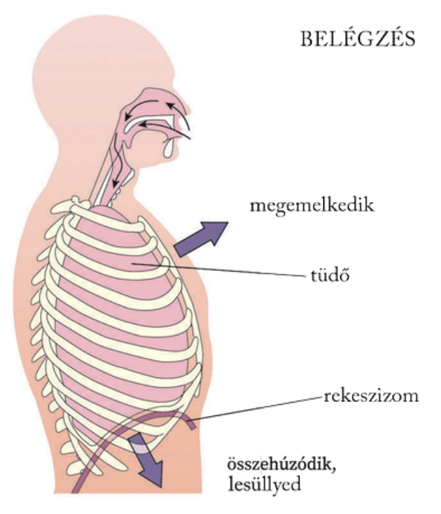
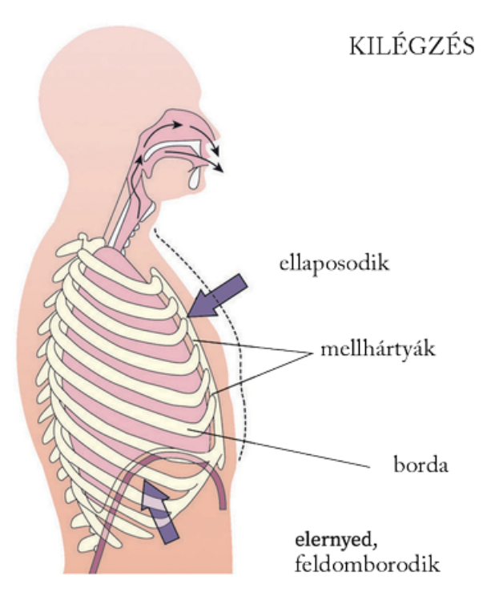
Belégzéskor az eredetileg a mellkas felé bedomborodó rekeszizom összehúzódik, így lemeze lefelé mozdul el, a hasüreg irányába. Ezáltal a mellkas ürege megnövekszik. Ugyanakkor a bordák közötti izmok is összehúzódnak, amelynek következtében kissé megemelkednek a bordák, és így a mellkas ürege tovább nő. A mellkas üregének térfogatváltozásait a tüdő passzívan követi. A kitáguló tüdőben átmenetileg csökken a levegő nyomása, belégzéskor tehát a nagyobb nyomású külső levegő a tüdőbe áramlik.
Kilégzéskor az izmok ellazulnak, a bordák lesüllyednek, rekeszizom eredeti nyugalmi helyzetébe tér vissza. A mellkas üregének és a tüdőnek csökken a térfogata. A tüdőben megnő a levegő nyomása, ezért a tüdőből a levegő egy része a külvilágba áramlik. A kilégzés végére a belső és a külső nyomás kiegyenlítődik.
A nők nyugodt légzésére jellemző, hogy légzőmozgásaikban a bordaközi izmok jelentősebb szerepet töltenek be, mint a rekeszizom mozgása, mellkasi légzésük a domináló. A férfiak nyugodt légzésére inkább a hasi légzés jellemző, amelyben a rekeszizom mozgása a meghatározó.
A tüdő teljesítőképessége
Nyugodt belégzéskor nem telik meg teljesen levegővel a tüdő, és kilégzéskor sem ürül ki az összes levegő. A szokásos nyugodt ki- és belégzések alkalmával egyetlen lélegzetvétellel körülbelül 0,5 liter levegő cserélődik a tüdőben. Ezt nevezzük légzési térfogatnak. Szükség esetén a nyugodt belégzés után, maximálisan erőteljes belégzéssel a tüdő a felvett 0,5 literen felül átlagosan további 2,5 liter levegő felvételére képes. Ez a belégzési tartalék levegő. A nyugodt kilégzés után pedig erőltetett kilégzéssel átlagosan 1 liter levegőt lehet kipréselni a tüdőből a légzési térfogaton kívül. Ezt nevezzük kilégzési tartalék levegőnek. A légzési térfogat a tartalék levegők térfogataival együttesen teszi ki a tüdő levegőbefogadó képességét, a vitálkapacitást. Ez nyugodt légzés alkalmával nincs kihasználva, a léghólyagocskák számottevő mennyisége nem vesz részt a légzésben. Ha azonban például fokozott testi munka növeli a szervezet oxigénszükségletét, akkor mélyebb légzéssel egy lélegzetvételre nagyobb mennyiségű levegő cserélődik a tüdőben. Nyugalomban átlagosan 16-szor veszünk lélegzetet percenként. Ez a 0,5 literes normális légzési térfogatot tekintve, 8 liter levegő kicserélését jelenti a tüdőben egy perc alatt. Ez a légzési perctérfogat.
A táplálkozás
A táplálkozás a tápanyagok felvétele és azok hasznosítása a szervezet számára. Szervrendszere a bélcsatorna, a hozzá kapcsolódó mirigyekkel. Bélcsatornánk három szakaszból, elő-, közép- és utóbélből áll.
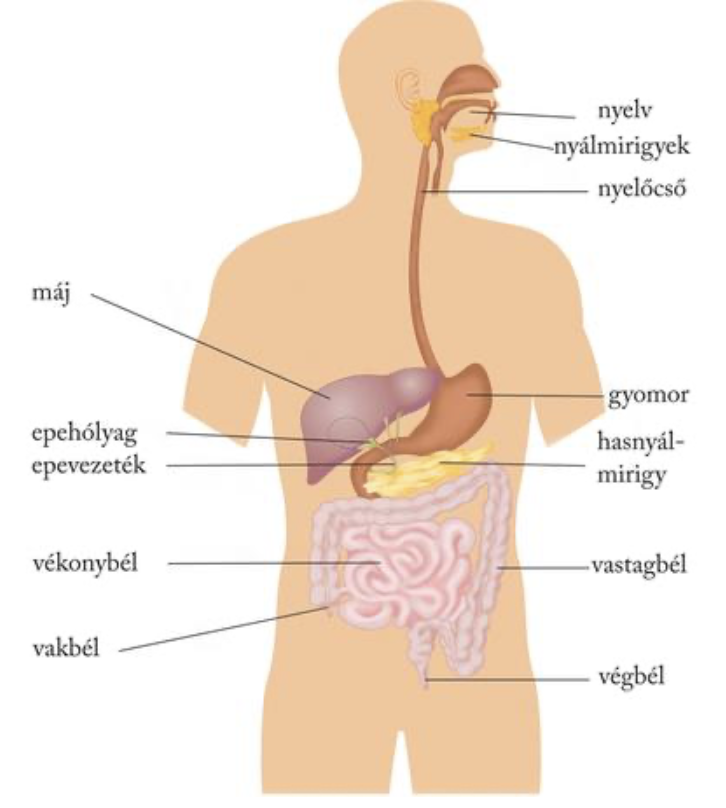
Az előbél
Az előbél kezdeti szakasza a szájüreg. Első lépésként az ide kerülő táplálékot a fogak felaprítják. A fogak az állkapocs és a felső állcsont fogmedreibe illeszkednek. A fogmederbe nyúlik a foggyökér, míg a szabadon kiálló rész a korona. A koronát kívülről zománcréteg borítja, amely testünk legkeményebb szövete. A foggyökeret cementréteg borítja, amely kevésbé ellenálló. A rétegek alatt a fog legnagyobb részét kitevő dentin található. A dentin veszi körül a fogüreget, amelyet lazarostos kötőszövet tölt ki. Ebben találhatók a foggyökér csúcsán belépő hajszálerek és idegrostok.
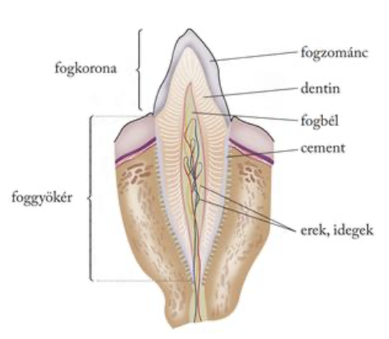
A kisgyermek első fogai rendszerint hat hónapos korában bújnak ki. Tejfogai nőnek, összesen húsz darab. Hatéves kor után a tejfogakat fokozatosan a maradó fogak váltják fel. Ez alól a legkésőbb, a serdülőkor befejeződését követően kibújó bölcsességfogak jelentenek kivételt. A fogváltás során az állkapocs és a felső állcsont fogmedrében kifejlődő 4 metszőfog, 2 szemfog és 10 örlőfog összesen 32 maradó fogat eredményez.
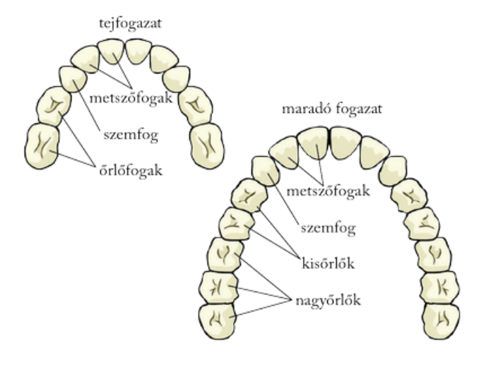
A felaprított táplálékot a nyelv keveri össze a nyállal és formálja falattá. A nyálat a szájüregbe nyíló három pár nyálmirigy termeli.
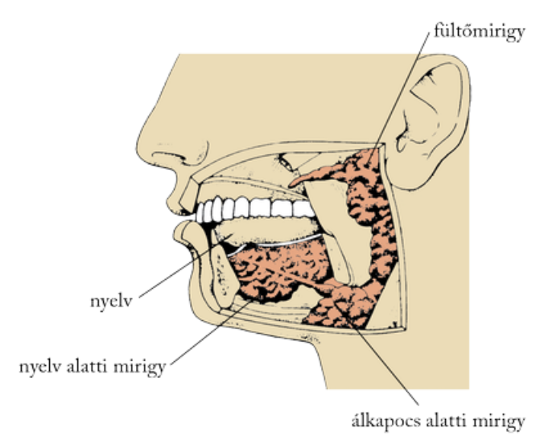
Ezek a nyelv alatt, az állkapocs alatt és a fültő alatt elhelyezkedő mirigyek. A nyál legnagyobb részben víz, ezen kívül ionokat és fehérjéket tartalmaz. Ez utóbbiak közül a legjelentősebb az amiláz nevű emésztőenzim. Az amiláz már a szájüregben megkezdi a keményítő bontását.
Nyeléskor a falatot a felemelkedő nyelv a garat felé továbbítja, egyidejűleg a lágy szájpad elzárja az orrüreg felé, a gégefedő pedig a légcső felé vezető utat. Ezért a táplálék a nyelőcsőbe jut.
A nyelőcsövet belülről hámszövet béleli, amely alatt kötőszövet, illetve ez alatt, az alsó kétharmad részen simaizomszövet helyezkedik el. A táplálék a nyelőcsőben nem súlyánál fogva, hanem aktív izomtevékenység következtében halad előre. A nyelőcső táplálék feletti szakaszának izomzata ugyanis összehúzódik, míg az ez alatti szakasza kitágul. Ezáltal a táplálék lejjebb csúszik. Ekkor az eddig ellazult rész húzódik össze, és az ez alatti szakasz tágul ki.
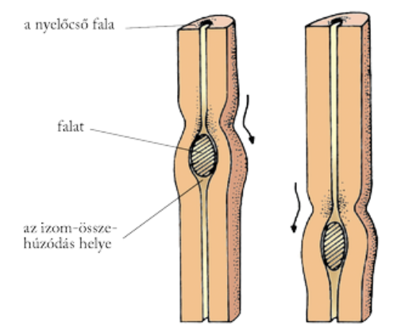
Az összehúzódás és elernyedés hullámszerűen fut végig az egész nyelőcsövön. A táplálékot ily módon tovább préselő mozgás a bélcsatorna más részeire is jellemző, közös néven ezeket perisztaltikus mozgásnak nevezzük. A nyelőcső perisztaltikája a gyomorszájon keresztül az előbél utolsó szakaszába, a gyomorba juttatja a táplálékot. A gyomor a bélcsatorna legtágabb része. Izmos falát belülről nyálkahártya borítja, amely mirigysejteket tartalmaz. Az általuk termelt váladék a gyomornedv. Az emésztés szempontjából két fontos alkotója a sósav és egy fehérjebontó enzim, a pepszin. A nyál 7-es pH körüli kémhatását a gyomor sósavtermelése 2-es pH körüli, erősen savas kémhatású környezetre változtatja. Emiatt a gyomorban az amiláz hatása megszűnik, viszont gyomornedv fehérjebontó anyagát (pepszinogén) működő pepszinné aktiválja. Ezzel megkezdődik a gyomorban a táplálék fehérjéinek emésztése. A gyomor falát vastag nyákréteg védi az önemésztéstől, amit mirigysejtek termelnek. A táplálék és az enzimtartalmú gyomornedv keveredését a gyomor erőteljes perisztaltikus és keverő mozgása segíti elő.
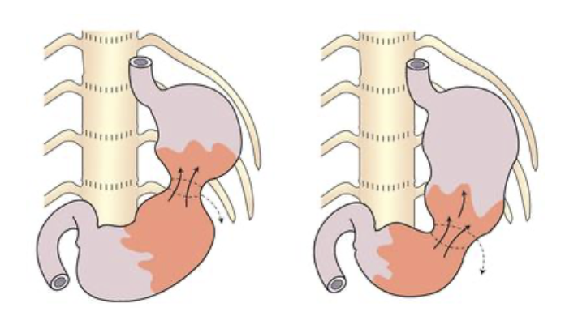
A gyomor a vékonybélbe továbbítja tartalmát.
A középbél
Bár a szénhidrátok emésztése már a szájüregben, illetve a fehérjéké a gyomorban megkezdődött, a táplálék megemésztésének döntő része a középbelet képező vékonybélben zajlik. A vékonybél kezdeti szakaszába, a patkóbélbe torkollik az epevezeték.
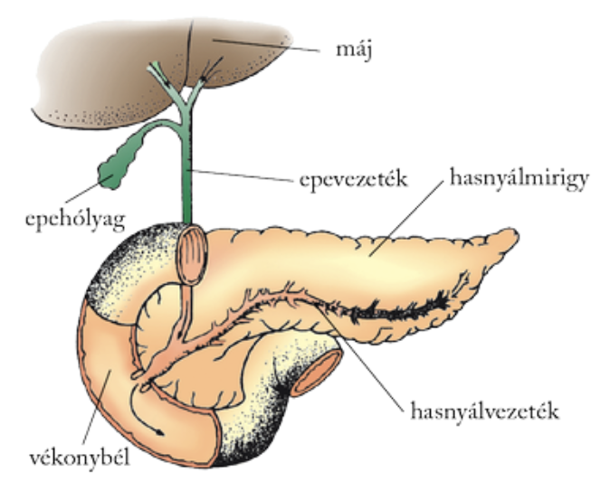
Az epe a májban folyamatosan termelődik, és az epehólyagban tárolódik. Itt besűrűsödik, és időnként az epevezetéken keresztül a vékonybélbe ürül. A benne található epesavak szerepe egyrészt a zsírok kolloid cseppecskékké diszpergálása. Az apró cseppek nagyobb összfelületén ugyanis jobban érvényesül az enzimhatás. Másrészt az epesavak jelenléte aktiválja a zsírbontó enzimeket. Az epe színe barnászöld a hemoglobin bomlástermékeitől.
A vékonybélbe üríti váladékát a hasnyálmirigy is. A hasnyál többféle enzimet tartalmaz. A fehérjebontó enzimek kisebb peptidekre bontják a polipeptidláncokat. Ilyen enzim például a tripszin. A szénhidrátbontó enzimek a keményítőt és a glikogént bontják diszacharidokra. Közöttük a legfontosabb a hasnyálamiláz. A zsírokat bontó enzimek, mint a lipáz, a zsírsavak és a glicerin közötti észterkötéseket bontják zsírsavakra és glicerinre. Az epe és a hasnyál 8 körüli pH-ja a savas gyomortartalmat a vékonybél elején semlegesíti, és kialakítja az optimális körülményeket a hasnyál enzimjeinek a működéséhez.
A tápanyagok lebontását monomerekre a vékonybél falát alkotó hámsejtek membránfehérjéi végzik. Ezek az enzimek a diszacharidokat glükózra, a peptideket aminosavakra bontják. (Régebben úgy tartották, hogy ezek az enzimek is a bél üregében hatnak, az emésztőnedvet bélnedvnek nevezték.)
A táplálék előrehaladását és az emésztőnedvekkel való összekeveredését a vékonybél perisztaltikus mozgása segíti elő.
A lebontott tápanyagok molekulái a vékonybél nyálkahártyáján keresztül szívódnak fel. A bél belső felszínét borító nyálkahártyán számtalan kitüremkedés, bélbolyhok növelik meg a felszívási felületet. A bélbolyhok felszínét borító felszívóhám sejtjeinek felszínén a sejtplazma vékony nyúlványai mikrobolyhokat képeznek. Így a vékonybél tényleges felszívó felülete elérheti a $200 m^{2}$ -es nagyságot is.
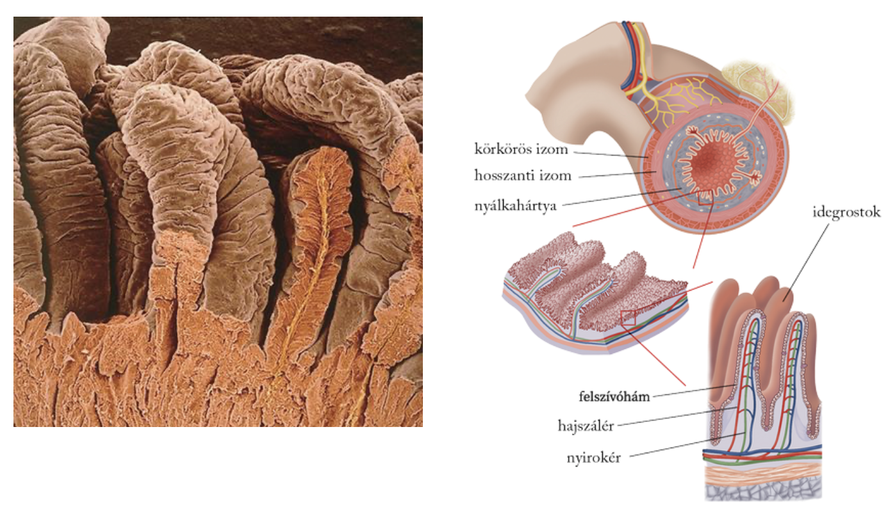
Ezeken kívül a bélbolyhok állandóan megrövidülő és elernyedő mozgása is elősegíti a felszívódást. A víz passzív transzportja mellett a különböző ionok és a szerves molekulák aktív transzporttal jutnak keresztül a bélbolyhok sejtjeinek membránján. A sejtekből a cukrok és az aminosavak a nagyvérköri hajszálerekbe jutnak, míg a zsírok többsége a nyirokhajszálerekbe kerül.
A bélbolyhok hajszálereibe bekerült tápanyagok a gyűjtőereken keresztül a májba kerülnek. A máj a tápanyagok átalakításában és a bomlástermékek kiszűrésében központi szerepet játszik. A bél felől a májba belépő gyűjtőér, a májkapuér számtalan elágazás után, tág hajszálerekben folytatódik. Ezek a máj kisebb egységeit, a májlebenykéket hálózzák be.
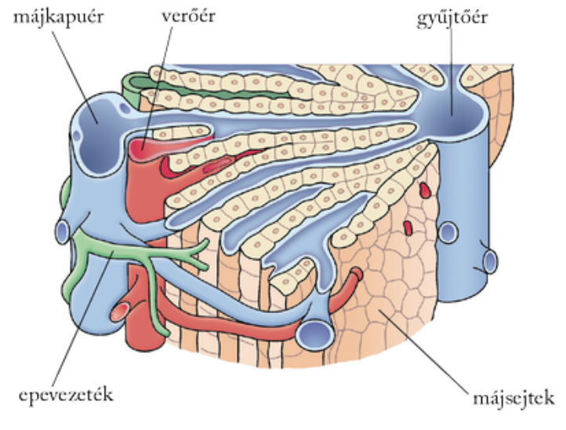
Az ide szállított tápanyagok a májsejtekbe kerülve átalakító anyagcsere-folyamatokban vesznek részt. A szénhidrátok átalakítása során a májsejtek a glükóz feleslegéből glikogént készítenek, amelyet tárolnak. A májban raktározott glikogén képezi a szervezet egyik fő, könnyen mozgósítható szénhidráttartalékát.
A fehérjék aminosavak formájában szívódnak fel a vérbe és szállítódnak a májba. Egy részükből a májsejtekben a vérplazma egyes fehérjéi (pl. fibrinogén, albuminok) képződnek, más részük eljut a szövetekhez, ahol beépülnek a szintetizálódó fehérjékbe. A feleslegessé vált aminosavak lebontási végterméke, a karbamid csak a májban képződik. Ugyancsak a májban keletkezik a nukleinsavak lebontási végterméke, a húgysav is. A nyirokerek a felszívott zsírsavakat a vérkeringésbe vezetik, majd innen kerülnek a májba, ahol zsírokká alakulnak. Ezek fehérjékhez kötődve ismét a keringésbe jutnak. Innen veszi fel az izomszövet a zsírsavakat energianyerésre, a fölösleget pedig a zsírszövet raktározza.
Az utóbél
A bélcsatorna további szakaszában a vékonybél folytatása a vakbél, a vastagbél és a végbél.
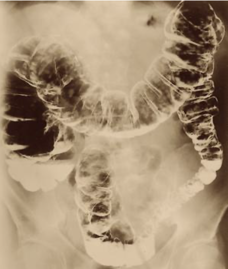
Ide kerülnek a felszívódás utáni emészthetetlen táplálékmaradványok, nagy mennyiségű vízzel és benne oldott ásványi sókkal. A középbél és az utóbél határán egy tág szakasz, az egyik végén zárt vakbél található, amelyhez a vékony féregnyúlvány kapcsolódik. A vastagbélben nagy mennyiségű bélbaktérium él. Ezek az ember számára emészthetetlen növényi rostok cellulóztartalmának egy részét lebontják. Működésük közben a B-vitaminok egyes alkotórészeit állítják elő, és anyagcseretermékeikkel megakadályozzák más, esetleg kórokozó baktériumok elszaporodását. A vastagbél nem termel emésztőenzimeket, elsődleges szerepe a jelentős mennyiségű víz és só felszívása a béltartalomból. Ennek következtében a béltartalom székletté sűrűsödik. A vastagbél lassú perisztaltikus mozgása a béltartalmat a végbél felé mozgatja. A széklet ürítésekor a végbélnyílás záróizmai ellazulnak, és a hasizmok préselő hatására a széklet kiürül.